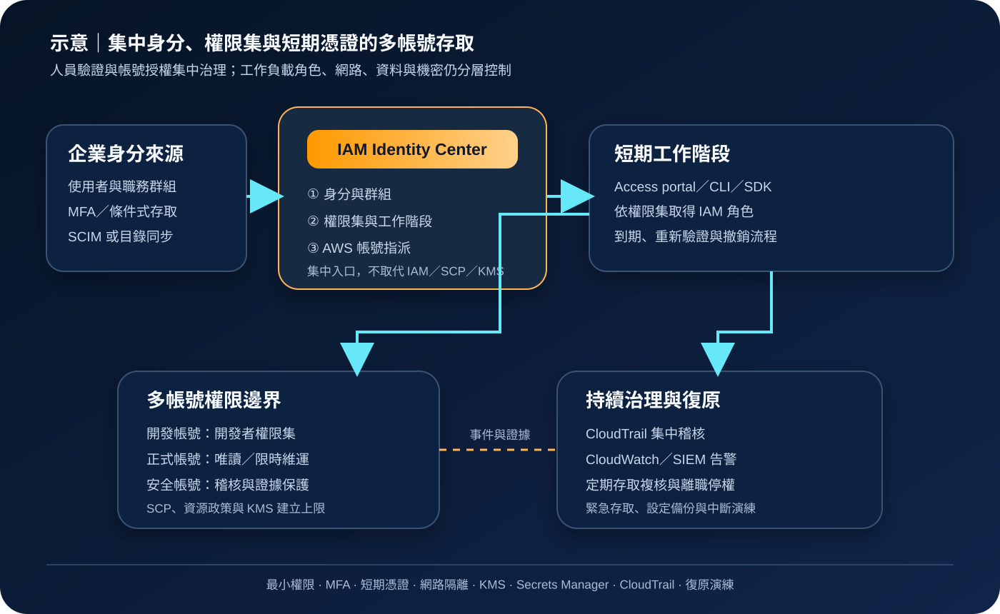

AWS IAM Identity Center：多帳號人員存取與短期憑證治理
AWS IAM Identity Center 提供工作人員存取 AWS 帳號與整合應用程式的集中入口，可連接既有身分提供者、管理使用者與群組、以權限集指派多帳號權限，並交付有期限的工作階段憑證。它是人員身分與授權的協調層，不取代工作負載角色、資源政策、網路隔離、資料加密、日誌與復原設計。
作者：Dr. William｜查閱與發布：2026-10-29
服務定位
AWS IAM Identity Center 是集中管理工作人員身分、登入入口與多帳號授權的服務。組織可使用 Identity Center directory，也可連接 Microsoft Active Directory 或外部身分提供者；管理者再以群組、權限集與帳號指派，控制哪些人能以何種權限進入哪些 AWS 帳號。
使用者從 AWS access portal 或整合的命令列流程登入，完成身分驗證後取得有期限的工作階段。權限集會在目標帳號建立對應的 IAM 角色與政策關係，實際存取仍同時受 IAM 政策、服務控制政策、權限界限、資源政策、KMS 金鑰政策及服務端控制約束。
核心概念與服務邊界
身分與指派
- 組織執行個體：適合集中管理 AWS Organizations 內多帳號存取；應先確認管理帳號、委派管理員與區域策略。
- 帳號執行個體：僅服務單一 AWS 帳號或特定應用情境，能力與適用邊界不同。
- 身分來源：可使用 Identity Center directory、Active Directory 或外部 IdP；同一執行個體的同步與屬性映射須一致治理。
- 使用者與群組：以群組指派取代大量個別指派，讓到職、調職與離職流程可重複執行。
- 權限集：定義工作階段可使用的 AWS 權限、工作階段時間與相關政策，並佈建至目標帳號。
- 帳號指派：把使用者或群組、權限集與 AWS 帳號建立關係。
驗證、憑證與稽核
- AWS access portal：集中顯示已獲指派的帳號、角色與應用程式，不代表使用者可看見整個組織。
- 短期憑證：CLI 與 SDK 可透過登入流程取得有期限憑證，降低長期 Access Key 暴露風險。
- MFA：可由 Identity Center 或外部 IdP 執行；實際責任取決於身分來源與信任設定。
- SCIM：部分外部 IdP 可用自動佈建同步使用者與群組；屬性、刪除與停用行為須測試。
- CloudTrail：記錄 Identity Center、SSO Admin 與相關 API 活動，供變更追蹤及事件調查。
- 應用程式存取：可整合 AWS 管理應用程式及支援的客戶應用，但不等同一般網路代理或資料層授權。
適合與不適合的使用情境
適合
- 企業以 AWS Organizations 管理多個正式、測試、資料與安全帳號，需要統一登入入口。
- 既有企業 IdP 已實施 MFA、條件式存取與人員生命週期，希望延伸到 AWS 帳號。
- 不同職務需要可重複使用的唯讀、開發、維運、資安稽核或緊急管理權限。
- CLI 使用者需要短期憑證，不希望建立及輪替個人長期 Access Key。
- 稽核要求能追查身分來源、群組、權限集、帳號指派與實際 API 操作。
不適合或不能單獨完成
- 工作負載、服務帳號或 CI/CD 需要機器身分；應優先使用 IAM 角色、OIDC 或服務原生身分機制。
- 只需管理單一應用程式內的終端客戶註冊與登入；此類情境通常屬於 Amazon Cognito 或應用程式身分系統。
- 希望只靠單一登入阻擋公開網路、資料外洩或橫向移動；仍須 VPC、端點、安全群組、WAF、資料政策與監控。
- 組織尚未建立可靠的人事主檔、群組擁有者與離職停權流程，卻直接大量自動同步。
- 把 AdministratorAccess 長期指派給一般群組，未建立職責分離、到期與緊急權限流程。
示意故事案例：研發團隊以群組取得分層帳號權限
以下為示意案例，不代表特定企業或正式部署。 一家公司有共同服務、開發、測試與正式環境帳號。過去由各帳號建立 IAM 使用者，員工調職後仍保留舊權限，CLI Access Key 分散在個人電腦，離職停權也必須逐帳號處理。
公司啟用組織執行個體，連接企業 IdP，將「開發者」「正式環境值班」「資安稽核」群組同步至 IAM Identity Center。平台團隊建立開發寫入、正式唯讀、限時維運與稽核權限集，再把群組指派至必要帳號。一般使用者透過 MFA 與短期工作階段登入；正式環境的提升權限需核准、設定較短工作階段並由 CloudTrail 與 CloudWatch 告警。
應用程式機密仍存放於 Secrets Manager 或 Parameter Store，資料使用 KMS，私有服務透過 VPC 與端點限制網路路徑。組織保留獨立緊急存取程序，定期測試主要身分來源或 Identity Center 存取受阻時的復原方式；稽核記錄與基礎設施設定另行備份，因為身分集中不會自動備份工作負載資料。

建置與運作流程
- 盤點人員與帳號：列出 AWS 帳號、職務、現有 IAM 使用者、長期金鑰、應用程式、法規與離職時限。
- 選擇執行個體：依多帳號或單帳號需求選擇組織或帳號執行個體，確認管理區域與委派管理模式。
- 選擇身分來源：決定使用內建目錄、Active Directory 或外部 IdP，記錄驗證、MFA、SCIM 與屬性責任。
- 建立群組模型：以職務與責任建立群組，指派業務擁有者，避免以個人例外成為永久設計。
- 設計權限集：從唯讀及最小必要權限開始，設定工作階段時間，分離開發、維運、稽核與緊急管理。
- 套用組織控制：以 SCP、權限界限、資源政策與 KMS 金鑰政策建立權限上限，不只依賴權限集。
- 小範圍試行：先在測試帳號驗證入口、CLI、MFA、群組同步、拒絕規則、登出與撤銷時間。
- 建立指派：優先以群組指派帳號與權限集；個別使用者指派須有原因、期限與複核。
- 移除長期憑證：確認短期登入可用後，盤點並停用不必要 IAM 使用者與 Access Key。
- 保護機密：任何 credential、Access Key、Secret Key、Token、密碼與 cookie 不得放入程式、文件或權限集描述，改用 Secrets Manager 或 Parameter Store。
- 集中稽核：啟用組織級 CloudTrail，將日誌集中至受保護帳號，使用 CloudWatch 或 SIEM 偵測高風險變更及異常登入。
- 執行定期複核：比對人事狀態、群組、帳號指派、未使用權限與緊急存取紀錄。
- 演練中斷：測試 IdP、同步、DNS、網路或管理區域異常時的通報、緊急存取與復原順序。
成本、可用性與維運考量
IAM Identity Center 服務本身目前不另收取費用，但外部 IdP、Microsoft AD、網路連線、CloudTrail、CloudWatch、S3、KMS、SIEM、稽核保存與自動化仍可能計費。成本估算應包含身分平台授權、日誌量、長期保存、管理工時與緊急演練，不應只看 AWS 服務頁面的單項價格。
人員登入可用性同時依賴身分來源、MFA、同步、網路、DNS、管理區域與 AWS 服務狀態。若採多區域 IAM Identity Center，仍須依官方支援範圍設計與測試，不能把「已啟用第二區域」視為所有應用、權限、外部 IdP 與工作負載均自動完成災難復原。
主要維運工作包括群組擁有權、權限集版本、帳號指派、未使用權限、同步延遲、離職停權、CLI 設定及緊急存取。每個高權限集合都應有業務理由、核准人、最大工作階段、可使用帳號、到期日、監控規則與定期複核紀錄。
IAM Identity Center 特有資安風險與控制
- 身分來源被接管：外部 IdP 管理員、同步憑證與聯合設定採最小權限、MFA、短期管理工作階段及雙人覆核。
- 群組同步擴權：限制可同步群組與屬性，監控新增成員、群組改名、刪除及重新啟用。
- 權限集過寬：依職務拆分，使用最小權限與較短工作階段；高權限採限時核准，不把管理員權限放入一般群組。
- 帳號指派錯誤：對正式、安全與日誌帳號建立額外核准，定期輸出使用者、群組、帳號及權限集矩陣。
- MFA 責任空白：明確記錄由 Identity Center 或外部 IdP 執行 MFA，測試復原、遺失裝置與繞過流程。
- 長期 Access Key 殘留：完成 CLI 短期登入後移除不必要金鑰，以 Access Analyzer、credential report 或自動盤點持續追蹤。
- 工作階段過長：依風險設定權限集工作階段，正式管理操作採較短時限並要求重新驗證。
- 緊急帳號失控：緊急存取與日常 SSO 分離，credential 離線保護、使用即告警、事後輪替並定期演練。
- CloudTrail 缺口：集中記錄 Identity Center、SSO Admin、Organizations、IAM 與目標服務事件，防止一般管理者停用或刪除證據。
- 網路與公開存取誤解：SSO 不會關閉公開端點；仍須 VPC、PrivateLink、安全群組、WAF、資源政策與公開存取封鎖。
- KMS 權限不一致：權限集允許服務操作不代表可使用 KMS 金鑰；金鑰政策、Grant、IAM 與資料分類須共同驗證。
- 機密散落：應用程式密碼與 Token 放入 Secrets Manager 或 Parameter Store，禁止寫入權限集名稱、標籤、CLI 設定或文件。
- 離職停權延遲：身分來源停用、SCIM 同步、現有工作階段失效與帳號指派移除均須測量實際時間。
- 單一區域或 IdP 相依：建立狀態頁、替代通報、緊急存取與復原手冊；依支援能力評估多區域並實測。
- 備份責任誤解：匯出權限設計與 IaC、保存稽核證據及復原程序；Identity Center 不會替工作負載資料執行備份。
共同責任邊界
AWS 負責 IAM Identity Center 受管服務、控制面及底層基礎設施的安全與可用性。客戶負責選擇執行個體與身分來源、保護 IdP 管理權、設定 MFA、管理同步、群組、權限集、帳號指派、SCP、IAM、KMS、網路、日誌、緊急存取與人員生命週期。
身分團隊負責驗證、群組與到離職資料；雲端平台團隊負責權限集、帳號指派及組織控制；工作負載團隊負責應用角色、資料、機密與網路；資安團隊負責監控、稽核及事件應變。IAM 最小權限、MFA／短期憑證、網路隔離、公開存取治理、KMS 加密、Secrets Manager 或 Parameter Store、CloudTrail／CloudWatch、備份與跨區復原必須共同落實。
上線與維運可執行檢查清單
- □ 已確認使用組織執行個體或帳號執行個體，並記錄管理區域與委派管理員。
- □ 身分來源、MFA、SCIM、屬性映射與停權責任均有明確擁有者。
- □ 使用群組而非大量個別指派，例外指派具有原因、期限與複核。
- □ 權限集採最小權限，開發、正式、稽核與緊急管理已分離。
- □ 高權限工作階段較短，需核准、使用即告警並定期檢查。
- □ SCP、權限界限、資源政策與 KMS 金鑰政策已建立權限上限。
- □ 管理者使用 MFA、聯合身分與短期憑證，不共用帳號。
- □ CLI 與 SDK 已改用短期登入，不必要的 IAM 使用者及 Access Key 已停用。
- □ VPC、私有端點、安全群組、WAF 與公開存取封鎖依工作負載落實。
- □ 資料與日誌依分類使用 KMS，跨帳號金鑰政策已實際測試。
- □ 應用機密使用 Secrets Manager 或 Parameter Store，未寫入程式、文件或設定檔。
- □ 組織級 CloudTrail 已集中保存 Identity Center、IAM、Organizations 與服務事件。
- □ CloudWatch 或 SIEM 會告警高權限指派、群組異動、MFA 變更及異常操作。
- □ 到職、調職、離職與承包商到期流程已測量停權所需時間。
- □ 每季或依風險複核群組、權限集、帳號指派與未使用權限。
- □ 緊急存取與日常 SSO 分離，credential 已離線保護且定期輪替與演練。
- □ 已測試主要 IdP、同步、網路或管理區域中斷時的登入與復原流程。
- □ 權限設計、設定與稽核證據已有受保護備份，工作負載另有跨區復原方案。
- □ 正式內容不含 credential、Access Key、Secret Key、Token、密碼或 cookie。
AWS 官方一手來源
- What is IAM Identity Center?（查閱：2026-10-29）
- Getting started with IAM Identity Center（查閱：2026-10-29）
- Considerations for changing your identity source（查閱：2026-10-29）
- Create, manage, and delete permission sets（查閱：2026-10-29）
- Assign user or group access to AWS accounts（查閱：2026-10-29）
- Get IAM role credentials for CLI access（查閱：2026-10-29）
- MFA types for IAM Identity Center（查閱：2026-10-29）
- Log IAM Identity Center API calls with AWS CloudTrail（查閱：2026-10-29）
- Security in AWS IAM Identity Center（查閱：2026-10-29）
- Resilience in AWS IAM Identity Center（查閱：2026-10-29）
- AWS IAM Identity Center FAQs（查閱：2026-10-29）
- AWS Shared Responsibility Model（查閱：2026-10-29）
內容說明
本文依查閱日可用的 AWS 官方文件整理，作為基礎學習與架構討論材料；實際部署仍須依最新執行個體能力、區域支援、身分來源、MFA、同步、工作階段、服務配額、定價、法規、組織架構與故障演練結果調整。